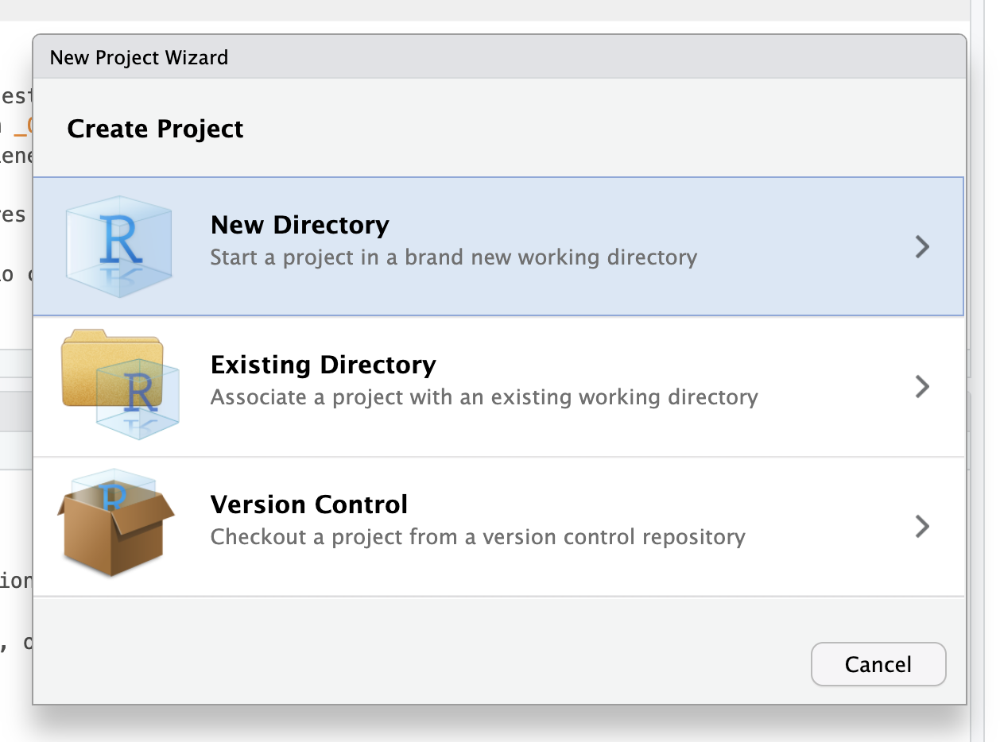

Organizar el trabajo en Proyectos de RStudio
4/1/2025
Proyectos
Antes de hacer cualquier trabajo que involucre datos con R, se recomienda crear un Proyecto de RStudio. Un proyecto es una forma de definir la carpeta específica donde vamos a guardar todos los scripts y archivos que vamos a necesitar. Se caracteriza por un archivo que termina en .Rproj, que marca nuestro espacio de trabajo: una sola carpeta que reúne todas las piezas de nuestro análisis.
¿Por qué trabajar con Proyectos?
El objetivo de un proyecto es tener todos nuestros datos y código en un sólo lugar, por lo que se vuelven autcontenidos; es decir, funcionarán sin depender de nada que esté fuera del proyecto.
Un efecto secundario de lo anterior es que nuestros proyectos serán portátiles: podremos cambiarlos de lugar en nuestro computador, abrirlos en otro computador, correrlos en la nube, o enviárselos a alguien más, y gracias a que son autocontenidos, seguirán funcionando.
A través del tiempo vamos a trabajar con distintas fuentes de datos, para objetivos distintos, incluso para llevar a cabo ideas o trabajos completamente diferentes. Los proyectos de RStudio nos permiten separar distintos espacios de trabajo, sin que los resultados de un proyecto contagien a otro. Si tenemos múltiples proyectos en los que trabajamos con R, al delimitarlos por medio de proyectos de RStudio podremos cambiar entre proyectos de manera rápida y sencilla.
También podremos tener distintas sesiones de R abiertas al mismo tiempo, en distintas ventanas de RStudio, cada una con proyectos distintos. Esto significa que cada proyecto de R va a tener un entorno distinto y scripts distintos. De esta forma, no mezclamos cosas ni nos confundimos.
Beneficios de trabajar con Proyectos
El beneficio principal de trabajar con proyectos en R es que simplifican muchísimo la gestión de las rutas de archivos. Todos los archivos con los que trabajamos nuestros computadores se encuentran en ubicaciones distintas, y estas ubicaciones varían entre computador y computador, y entre distintas personas. Por ejemplo, los datos con lo que yo trabajo están en una carpeta que tú no tienes en tu computador, y estas carpetas están a su vez dentro de una carpeta de usuario, que es distinto para cada persona. Peor aún, las estructuras de archivos son distintas en los diferentes sistemas operativos. Al crear un proyecto de RStudio, las rutas de todos los archivos dentro del proyecto empezarán desde la carpeta del proyecto. Esto significa que, si trabajamos en un proyecto de RStudio, podemos omitir completamente las rutas completas del archivo en nuestros computadores.
En términos prácticos, un archivo que está ubicado en una carpeta como /home/users/bastian/Documentos/Análisis de datos/Trabajo/Ejemplo/script.R podrá ser cargado tan solo con la ruta script.R si abrimos un proyecto de R e la carpeta Ejemplo. Esto es bueno por dos razones: porque no tendremos que escribir la ruta del archivo completa, y porque si yo envío este proyecto a otra persona, o lo subo a internet para compartirlo, cualquier persona podrá ejecutar los scripts en sus computadores, porque los archivos dentro del proyecto podrán estar en cualquier lugar de su computador, pero gracias al proyecto, R encontrará los archivos.
Crear un proyecto
Para crear un proyecto nuevo, elegimos la opción New Project… en el menú File, o apretamos el ícono del cubo celeste ubicado en la esquina superior derecha de RStudio y elegimos la primera opción.
Una vez que creamos el proyecto, podemos abrir nuestro proyecto haciendo doble clic en el archivo que termina en “.Rproj”, seleccionando en RStudio el menú File y el ítem Open Project… o Recent Projects, o en la esquina superior derecha de RStudio, donde aparece un icono celeste que contiene los proyectos recientes.
Es muy importante que, antes de empezar a trabajar con R, te asegures de que estás dentro del proyecto correcto!